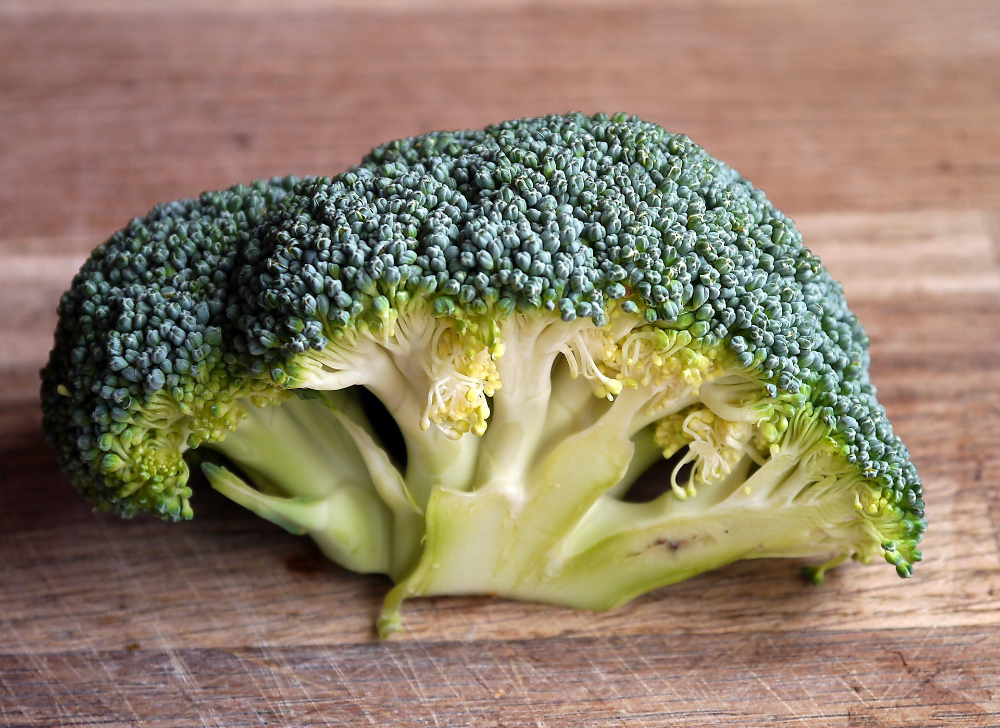
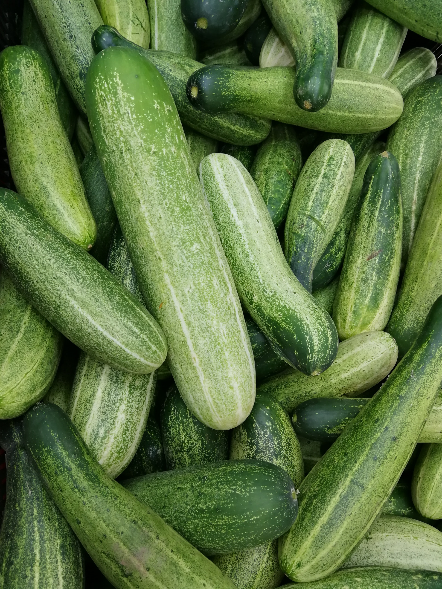
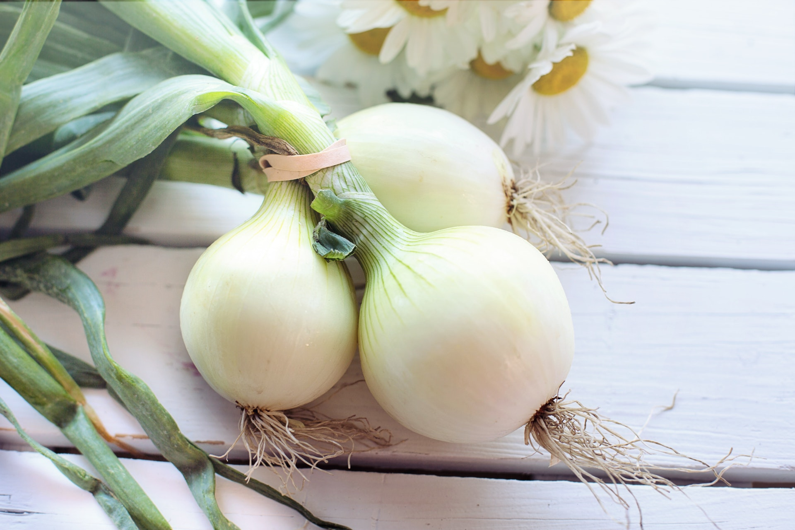
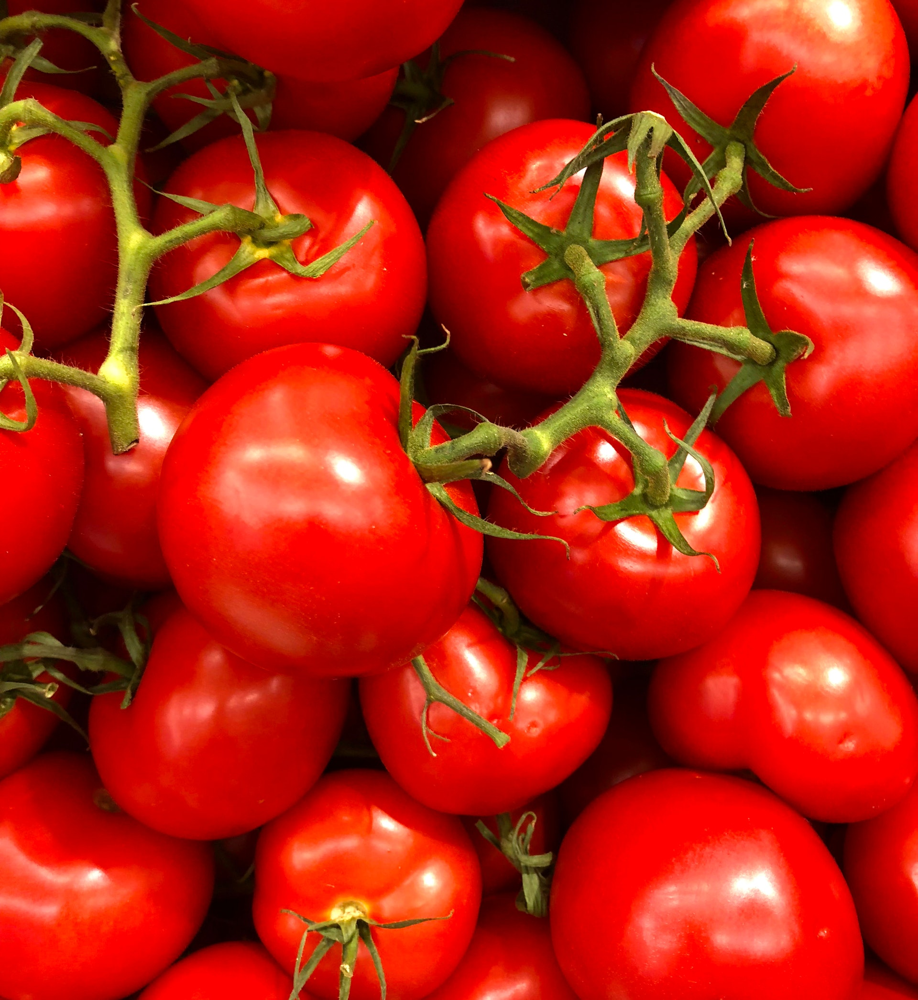
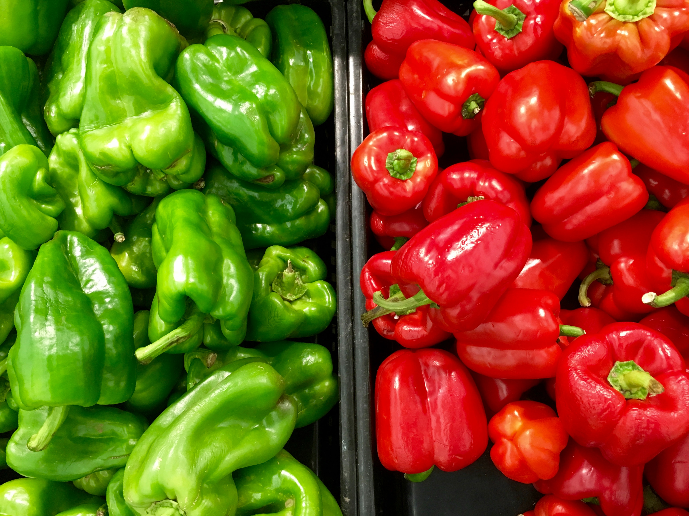
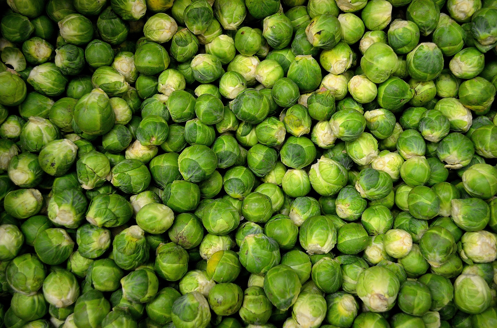
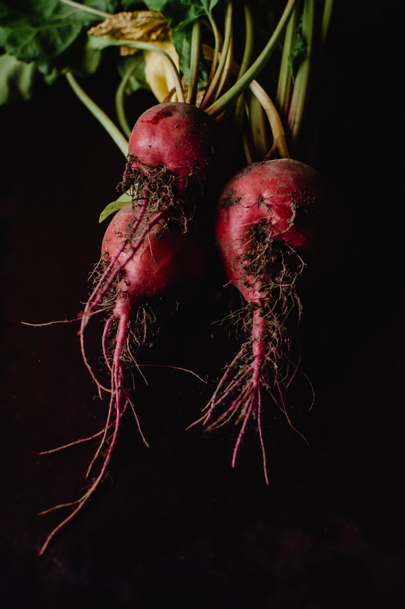

Top cele mai sănătoase legume
Morcovii

Morcovii - pe langa faptul ca sunt extrem de gustosi, au o culoare vie, am fi tentati sa spunem, ludica, sunt si sanatosi. Morcovii ne pot imbunatati vederea, datorita aportului semnificativ de vitamina A. Totodata, sunt si printre cele mai cunoscute, nu numai printre cele mai sanatoase legume din lume. Copiii ii adora, parintii ii folosesc destul de des in felurile de mancare pe care le gatesc pentru familie. Gustul dulce, mai ales al miezului, este favoritul copiilor. In acelasi timp, trebuie sa recunoastem si spunem lucrurilor pe nume: s-a format, intr-o oarecare masura, un cult al morcovului, iar vina este, bineinteles, a lui Bugs Bunny, celebrul personaj animat din Looney Tunes. Copiii, si nu numai ei, isi doresc sa manance morcovi, nu neaparat datorita gustului bun, ci datorita promovarii acestei legume. Nimic mai sanatos, de fapt. In definitiv, desenele animate ar trebui sa promoveze mai des consumul unor astfel de alimente, indeosebi al acelora care sunt unele dintre cele mai sanatoase legume.
Broccoli
Broccoli - Daca in copilarie, preferam legumele gustoase, in anii de adult, trebuie sa ne gandim serios la stilul de viata pe care l-am adoptat in timp. Tocmai de aceea, va fi necesar sa ne orientam spre acele legume, care nu sunt neaparat gustoase sau un aspect placut, ci sunt portia de sanatate de care avem nevoie. Broccoli este leguma care poate preveni cancerul si, fara doar si poate, una dintre cele mai sanatoase legume. Din nefericire, nu are un gust prea bun, cel putin in comparatie cu alte legume. Mai mult decat atat, nu este o leguma prea cunoscuta consumatorilor din Moldova si tocmai acesta este si motivul pentru care multi, ba refuza sa le consume, ba nu au auzit de ele. Si trebuie sa mentionam ca broccoli intareste si sistemul imunitar, ca alte legume, de altfel.
Castraveți
Castraveți - În schimb, toti au auzit de castraveti si, la fel ca morcovii, cei dintai sunt foarte gustosi. Nu numai ca verdeata lor este culoarea sanatatii, a naturii, dar este benefica intregului organism. Pe langa faptul ca au un gust bun si sunt si zemosi, castravetii ajuta la intarirea muschilor, a ligamentelor si, asa cum ati si ghicit, a oaselor. Inca din timpuri stravechi, femeile foloseau castravetii ca masca, considerandu-se ca infrumusetea pielea, insa si impotriva cearcanelor inestetice. Si, pana la urma, s-a dovedit ca toate acestea sunt adevarate, intrucat castravetii sunt folositi, in prezent, atat in consum, cat si in productie de cosmetice.
Ceapa
Ceapa - Si daca tot vorbeam de broccoli, de gustul nu foarte placut al acestei legume, dar si de prevenirea unor forme de cancer, nu trebuie sa uitam din topul nostru un alt aliment, folosit mai des in prepararea mancarurilor, decat ca produs de baza, si anume ceapa, care, de asemenea, se afla printre cele mai sanatoase legume. Aceasta scade nivelul de zahar din sange si previne unele forme de cancer. Mai mult decat atat, ceapa ajuta si la functionarea inimii in parametri normali.
Roșii
Roșiile - Cam tot in aceeasi categorie cu ceapa, si nu numai, intra rosiile, desi acestea din urma sunt mult mai gustoase si pot fi mancate ca atare. Ba chiar, ele pot fi si savurate in diferite sucuri naturale sau sosuri fierte, si nu prajite. Oricum, daca nu sunt mancate simplu, isi pierde din proprietatile lor. Dar care sunt acestea? In primul rand, rosiile sunt extrem de bogate in vitamine, putand asigura o buna parte din energia de care avem nevoie intr-o zi. Totodata, aceste legume sanatoase lupta si impotriva cancerului. Nu foarte curand, pe baza unor studii, s-a dovedit faptul ca rosiile, unele dintre cele mai sanatoase legume, sunt potrivite si pentru infrumusetare, proprietatile lor fiind, asadar, mai multe. Curios este de urmarit placerea cu care unele persoane consuma aceste legume, si dezgustul altora. Chiar si asa, cea din urma categorie ar trebui sa stie ca rosiile lupta impotriva colesterolului ridicat, detoxifica organismul, ajuta la imbunatatirea sistemului osos si, bineinteles, lupta impotriva bolilor cardiace.
Ardei
Ardeiul este bogat in vitamine, antioxidanţi şi minerale, nutrienţi extrem de benefici în buna funcţionare organismului, este un anticoagulant efecient, care ajuta la prevenirea atacului cerebral si a infarctului. Indiferent de culoare, ardeiul gras este bogat în antioxidanți și acid folic, prevenind cancerul. Ardeiul il putem consuma in stare proaspata in salate, sucuri, dar si copt in zacusca, tocana, sau conservat, sub forma de muraturi.
Varză de Bruxelles
Varză de Bruxelles – Antioxidanții din aceste legume verzi pot ajuta la detoxifierea radicalilor liberi care provoacă cancer, iar o jumătate de cană conţine 80% din vitamina C zilnică. De asemenea, ajută la combaterea bolilor de inimă și la îndepărtarea cataractei.
Sfecla roșie
Sfecla roşie – Coaptă, fiartă sau crudă, această legumă rădăcinoasă conține niveluri ridicate de antioxidanți care luptă împotriva cancerului, dar are și luteină, care protejează ochii. Şi nu arunca nici frunzele! Tulpinile verzi sunt partea cea mai hrănitoare a legumelor și pot fi gătite ca alte legume verzi cu frunze verzi.